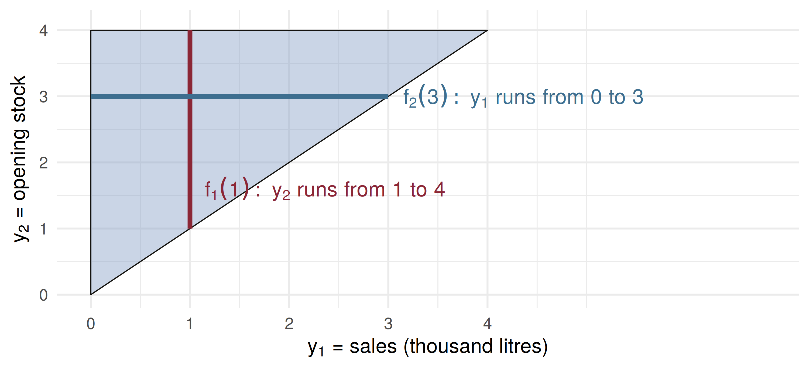
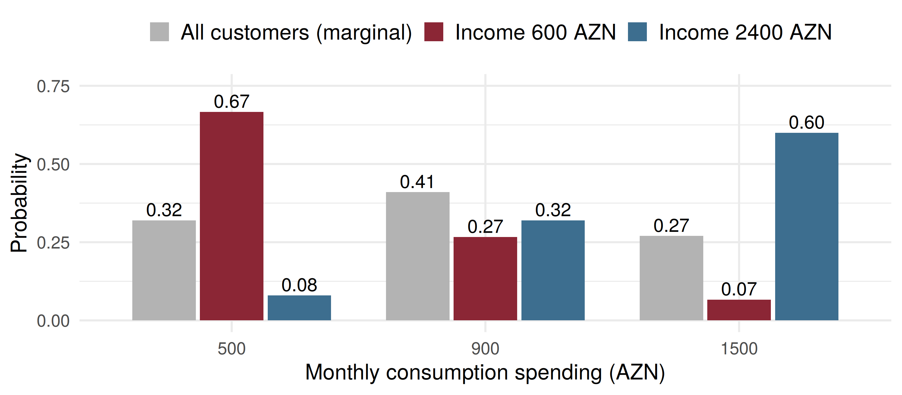

600 1200 2400
0.30 0.45 0.25 spend
income 500 900 1500
600 0.667 0.267 0.067
1200 0.222 0.556 0.222
2400 0.080 0.320 0.600Marginal and Conditional Probability Distributions
ADA University, School of Business
Information Communication Technologies Agency, Statistics Unit
2026-09-24
By the end of this lecture, you will be able to:
Recover the marginal distribution of one variable from a joint table by summing, and from a joint density by integrating (Definition 5.4)
Read the limits of that integral off a sketch of the support
Compute a conditional probability function \(p(y_1 \mid y_2)\) and a conditional density \(f(y_1 \mid y_2)\) (Definitions 5.5 and 5.7)
Build a joint table from a marginal and a set of conditionals, and reverse the conditioning
Condition a claim-size density on the event that the claim exceeds a deductible
Wackerly §5.3
Wednesday opened Chapter 5 with bivariate and multivariate probability distributions: a joint probability function \(p(y_1, y_2)\) or a joint density \(f(y_1, y_2)\) describes two random variables at once, and we found probabilities of events about the pair.
A joint distribution holds more than we usually ask of it. Today we take two things out of it: the distribution of one variable alone (the marginal), and the distribution of one variable once the other is known (the conditional).
The retail desk’s question
A Baku bank’s household survey records monthly income \(Y_1\) and monthly consumption spending \(Y_2\), in AZN, as a joint table.
The card team wants the distribution of spending across all customers. The credit team wants it for customers earning 600 AZN. Same table, two different questions.
The first is a marginal distribution; the second is a conditional one. Both are read out of the joint table without any new data.
Definition 5.4
a. If \(Y_1, Y_2\) are jointly discrete with probability function \(p(y_1, y_2)\), the marginal probability functions are \[p_1(y_1) = \sum_{\text{all } y_2} p(y_1, y_2), \qquad p_2(y_2) = \sum_{\text{all } y_1} p(y_1, y_2).\] b. If \(Y_1, Y_2\) are jointly continuous with density \(f(y_1, y_2)\), the marginal densities are \[f_1(y_1) = \int_{-\infty}^{\infty} f(y_1, y_2)\,dy_2, \qquad f_2(y_2) = \int_{-\infty}^{\infty} f(y_1, y_2)\,dy_1.\]
The events \((Y_1 = y_1, Y_2 = y_2)\) are mutually exclusive, so \((Y_1 = y_1)\) is their union over \(y_2\): sum out the variable you do not want.
| \(p(y_1, y_2)\) | \(y_2 = 500\) | \(y_2 = 900\) | \(y_2 = 1500\) | \(p_1(y_1)\) |
|---|---|---|---|---|
| \(y_1 = 600\) | 0.20 | 0.08 | 0.02 | 0.30 |
| \(y_1 = 1200\) | 0.10 | 0.25 | 0.10 | 0.45 |
| \(y_1 = 2400\) | 0.02 | 0.08 | 0.15 | 0.25 |
| \(p_2(y_2)\) | 0.32 | 0.41 | 0.27 | 1 |
Row totals give income alone; column totals give spending alone. The card team’s answer is the bottom row: \(p_2(500) = 0.20 + 0.10 + 0.02 = 0.32\).
The totals sit in the margins of the table, which is where the name comes from.
A Sumgait filling station starts the day with \(Y_2\) thousand litres of diesel and sells \(Y_1\). With no delivery during the day, \(Y_1 \le Y_2\), and \[f(y_1, y_2) = \tfrac{1}{8}, \qquad 0 \le y_1 \le y_2 \le 4 \quad (0 \text{ elsewhere}).\]
Sales alone. For fixed \(y_1\), the density is positive only for \(y_1 \le y_2 \le 4\): \[f_1(y_1) = \int_{y_1}^{4} \tfrac{1}{8}\,dy_2 = \frac{4 - y_1}{8}, \qquad 0 \le y_1 \le 4.\]
Stock alone. For fixed \(y_2\), it is positive only for \(0 \le y_1 \le y_2\): \[f_2(y_2) = \int_{0}^{y_2} \tfrac{1}{8}\,dy_1 = \frac{y_2}{8}, \qquad 0 \le y_2 \le 4.\]

Integrating out \(y_2\) walks up a vertical slice; integrating out \(y_1\) walks across a horizontal one. Sketch the support first, every time.
The multiplicative law, applied to the events \((Y_1 = y_1)\) and \((Y_2 = y_2)\), gives \[p(y_1, y_2) = p_1(y_1)\,p(y_2 \mid y_1) = p_2(y_2)\,p(y_1 \mid y_2).\]
Definition 5.5
If \(Y_1, Y_2\) are jointly discrete with joint probability function \(p(y_1, y_2)\) and marginals \(p_1(y_1)\), \(p_2(y_2)\), the conditional discrete probability function of \(Y_1\) given \(Y_2\) is \[p(y_1 \mid y_2) = P(Y_1 = y_1 \mid Y_2 = y_2) = \frac{p(y_1, y_2)}{p_2(y_2)}, \quad \text{provided } p_2(y_2) > 0.\]
Condition on income \(Y_1 = 600\): keep that row and divide it by its total, \(p_1(600) = 0.30\).
\[\begin{aligned} p(500 \mid 600) &= 0.20 / 0.30 = 0.667 \\ p(900 \mid 600) &= 0.08 / 0.30 = 0.267 \\ p(1500 \mid 600) &= 0.02 / 0.30 = 0.067 \end{aligned}\]
The three add to 1: a conditional distribution is a distribution, just over a smaller world.
Across all customers, \(P(Y_2 = 500) = 0.32\). Among the 600-AZN earners it is 0.667. Knowing income more than doubles the chance of the lowest spending band.
600 1200 2400
0.30 0.45 0.25 spend
income 500 900 1500
600 0.667 0.267 0.067
1200 0.222 0.556 0.222
2400 0.080 0.320 0.600
A lender’s book is 50% small loans (\(Y_1 = 1\)), 30% medium (\(Y_1 = 2\)), 20% large (\(Y_1 = 3\)). Annual default rates \(p(1 \mid y_1)\) are 6%, 5% and 10%. So \(p(y_1, 1) = p_1(y_1)\,p(1 \mid y_1)\):
| small | medium | large | \(p_2(y_2)\) | |
|---|---|---|---|---|
| \(y_2 = 1\) (default) | 0.030 | 0.015 | 0.020 | 0.065 |
| \(y_2 = 0\) (repays) | 0.470 | 0.285 | 0.180 | 0.935 |
The risk committee asks the other conditional: what share of defaults are large? \[p(3 \mid 1) = \frac{p(3, 1)}{p_2(1)} = \frac{0.020}{0.065} = 0.308\] Large loans are 20% of the book but 31% of the defaults.
For continuous variables \(P(Y_2 = y_2) = 0\), so Definition 5.5 would divide by zero. Wackerly instead starts from the conditional distribution function \(F(y_1 \mid y_2) = P(Y_1 \le y_1 \mid Y_2 = y_2)\) (Definition 5.6) and its integrand.
Definition 5.7
For any \(y_2\) with \(f_2(y_2) > 0\), the conditional density of \(Y_1\) given \(Y_2 = y_2\) is \[f(y_1 \mid y_2) = \frac{f(y_1, y_2)}{f_2(y_2)},\] and for any \(y_1\) with \(f_1(y_1) > 0\), \(\;f(y_2 \mid y_1) = f(y_1, y_2)/f_1(y_1)\).
Same recipe as the table: take a slice of the joint, divide by its total.
Given an opening stock \(y_2\), with \(0 < y_2 \le 4\): \[f(y_1 \mid y_2) = \frac{1/8}{y_2/8} = \frac{1}{y_2}, \qquad 0 \le y_1 \le y_2.\] Given the stock, sales are uniform on \([0, y_2]\).
Probability of selling at most 1 thousand litres:
| \(P(Y_1 \le 1 \mid \cdot)\) | |
|---|---|
| stock \(Y_2 = 3\) | \(\int_0^1 \frac{1}{3}\,dy_1 = 0.333\) |
| stock \(Y_2 = 1.5\) | \(\int_0^1 \frac{1}{1.5}\,dy_1 = 0.667\) |
| stock unknown, \(f_1\) | \(\int_0^1 \frac{4 - y_1}{8}\,dy_1 = 0.4375\) |
Motor claims \(Y\) (thousand AZN) are gamma, \(\alpha = 2\), \(\beta = 0.4\): mean 800 AZN. With a 500 AZN deductible the insurer only sees claims with \(Y > 0.5\). By Definition 2.9, \(P(Y \le y \mid Y > d) = [F(y) - F(d)]/[1 - F(d)]\); differentiate: \[f(y \mid Y > d) = \frac{f(y)}{P(Y > d)}, \quad y > d \qquad (0 \text{ for } y \le d).\]
P_above_d scale_up P_over_1.5 P_over_1.5_given_d
0.645 1.551 0.112 0.173 Cut the density at \(d\), then stretch what is left so it again has area 1.
fy = y => y * Math.exp(-y / 0.4) / 0.16 // gamma(2, 0.4) density
Sd = Math.exp(-d / 0.4) * (1 + d / 0.4) // P(Y > d)
grid = Array.from({length: 400}, (_, i) => {
const y = (i + 1) / 100;
return {y, f: fy(y), c: y > d ? fy(y) / Sd : 0};
})
md`P(Y > d) = **${Sd.toFixed(3)}**, so every surviving density value is multiplied by **${(1 / Sd).toFixed(2)}**. Dashed: f(y). Shaded: f(y | Y > d).`Plot.plot({
width: 1150, height: 290, marginLeft: 78, marginBottom: 58,
style: {fontSize: "18px"},
x: {label: "Claim size y (thousand AZN)", domain: [0, 4], ticks: 8},
y: {label: "Density", domain: [0, 2.6]},
marks: [
Plot.areaY(grid, {x: "y", y: "c", fill: "#8b2635", fillOpacity: 0.35}),
Plot.line(grid, {x: "y", y: "c", stroke: "#8b2635", strokeWidth: 2.5}),
Plot.line(grid, {x: "y", y: "f", stroke: "#14130f", strokeWidth: 2, strokeDasharray: "6 4"}),
Plot.ruleX([d], {stroke: "#3d6e8f", strokeWidth: 2}),
Plot.ruleY([0])
]
})An internet provider links \(Y_1\), a household’s broadband outages last month, to \(Y_2 = 1\) if it then switched provider.
| \(y_1 = 0\) | \(y_1 = 1\) | \(y_1 = 2\) | |
|---|---|---|---|
| \(y_2 = 1\) (switched) | 0.06 | 0.08 | 0.06 |
| \(y_2 = 0\) (stayed) | 0.54 | 0.22 | 0.04 |
Four minutes, in pairs: (1) Find \(p_1(y_1)\) and \(p_2(1)\). (2) Find \(p(1 \mid y_1)\) for each \(y_1\). (3) Of the households that switched, what share had two outages?
Column totals: \(p_1(0) = 0.60\), \(p_1(1) = 0.30\), \(p_1(2) = 0.10\). Row total: \(p_2(1) = 0.20\).
Divide each switching entry by its column total: \[p(1 \mid 0) = \tfrac{0.06}{0.60} = 0.10, \quad p(1 \mid 1) = \tfrac{0.08}{0.30} = 0.267, \quad p(1 \mid 2) = \tfrac{0.06}{0.10} = 0.60\]
Part 2 is the engineer’s number; part 3 is the marketing team’s. Name which variable is given before you divide.
\(Y_1 = 1\) if a household holds a term deposit, \(Y_2 = 1\) if it holds a card loan: \(p(0,0) = 0.30\), \(p(0,1) = 0.20\), \(p(1,0) = 0.10\), \(p(1,1) = 0.40\). What is \(P(Y_1 = 1 \mid Y_2 = 1)\)?
At the fuel station, \(f(y_1, y_2) = 1/8\) on \(0 \le y_1 \le y_2 \le 4\). Given an opening stock of \(Y_2 = 2\), the conditional density of sales \(Y_1\) is
A claim density has \(P(Y > d) = 0.64\) at the deductible \(d\). For a claim size \(y > d\), the conditional density \(f(y \mid Y > d)\) equals
| Statement | |
|---|---|
| Definition 5.4(a) | \(p_1(y_1) = \sum_{\text{all } y_2} p(y_1, y_2)\) |
| Definition 5.4(b) | \(f_1(y_1) = \int_{-\infty}^{\infty} f(y_1, y_2)\,dy_2\) |
| multiplicative law | \(p(y_1, y_2) = p_1(y_1)\,p(y_2 \mid y_1) = p_2(y_2)\,p(y_1 \mid y_2)\) |
| Definition 5.5 | \(p(y_1 \mid y_2) = p(y_1, y_2)/p_2(y_2)\), \(\; p_2(y_2) > 0\) |
| Definition 5.6 | \(F(y_1 \mid y_2) = P(Y_1 \le y_1 \mid Y_2 = y_2)\) |
| Definition 5.7 | \(f(y_1 \mid y_2) = f(y_1, y_2)/f_2(y_2)\), \(\; f_2(y_2) > 0\) |
| given an event | \(f(y \mid Y > d) = f(y)/P(Y > d)\), \(\; y > d\) |
A marginal removes a variable: sum it out of a table, integrate it out of a density
The integration limits come from the support; sketch it before integrating
A conditional keeps one slice of the joint and divides by that slice’s total
\(p(y_2 \mid y_1)\) and \(p(y_1 \mid y_2)\) answer different questions; name what is given first
Conditioning on an event such as \(Y > d\) truncates the density and rescales it by \(1/P(Y > d)\)
Wackerly, 7th edition
§5.3: Exercises 5.19 – 5.38; start with 5.19, 5.22, 5.23, 5.25, 5.27, 5.33 and 5.38
Exercise 5.25(f) and 5.33(d) ask whether a conditional equals a marginal. Hold on to your answers
Redo the deductible slide with \(d = 1\) thousand AZN: what is \(P(Y > 1.5 \mid Y > 1)\)?
Week 12, Problem Set 2 is open now and closes Sunday 6 December at 23:59 on WeBWorK, covering §5.3.
Next class: 2 December, independent random variables (Wackerly §5.4): what it means when conditioning on one variable leaves the other’s distribution unchanged.
Dr. Samir Orujov
📧 sorujov@ada.edu.az
🏢 Building D, Room D325
🕓 Office hours: Wednesday, 16:00 – 18:00
Slides and readings: sorujov.net/teaching
Two different joint tables can share the same two marginals. Can you build one for the loan book?
In the fuel example, why is \(f(y_1 \mid y_2)\) undefined for \(y_2 > 4\)?
If \(p(y_2 \mid y_1)\) were the same for every \(y_1\), what would the income and consumption table look like?

Mathematical Statistics I - Marginal and Conditional Distributions